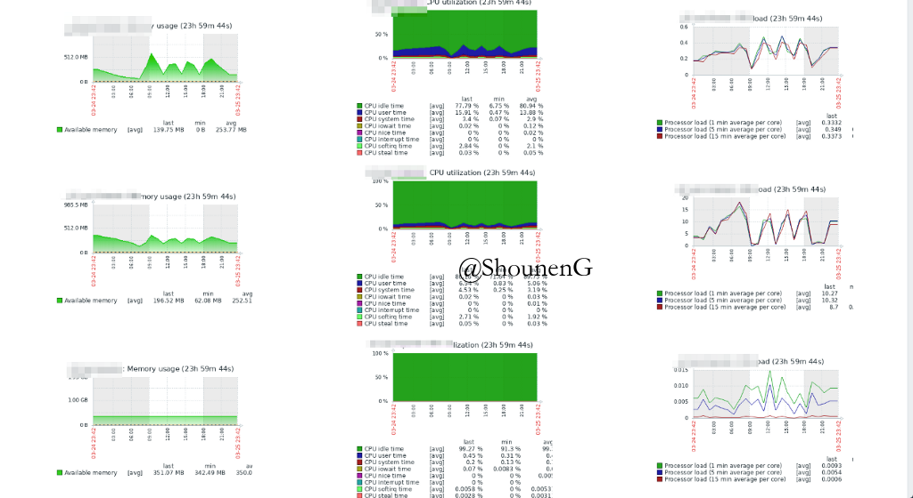

原文：https://hackernoon.com/understanding-zabbix-f2a83eeb1221
监控所有服务器基础设施。
背景
在为我们的产品设置基础设施时http://bit.ly/use-highlights我正在寻找用于服务器基础设施监控的开源工具，而不是藏着一颗炸弹（译者按：不监控大概就是藏着一颗炸弹吧），并且可以随着我们改进（服务架构）帮助我们自定义化。 两个主要的竞争者是Nagios和Zabbix。 我读了几篇比较两者的帖子，但是https://www.comparitech.com/net-admin/nagios-vs-zabbix/?lphiltid=5bfd07b68e39bb080950ca0b是我最喜欢的文章，因为我觉得它非常客观和详细。 我对Nagios的一个主要优势是你可以使用现有的设置升级到Nagios ** Nagios XI **。 但是对于我们的场景，我们觉得Zabbix绰绰有余。 所以就使用Zabbix吧。
这不是详细的”HowTo”博客。 但这将是我的学习总结，链接到适用于我的相关安装指南，链接到详细的”TODO”文章和我的经验法则。
安装前的一些基础知识
Zabbix有三个主要组件。 Zabbix Server，保存…（译者按：意思为保存数据） Zabbix Agent和Zabbix Web Interface。 Zabbix Server是从您要监视的服务器收集所有相关数据的服务器。 要监视的服务器称为“Agent”。 您可以在没有Zabbix Web部件的情况下监控服务器。 但我建议使用它，因为它可以让体验变得更好。
如果您只想在安装任何内容之前了解用户界面，请访问https://zabbix.org/zabbix/index.php并“以访客身份登录”。 您将没有“配置”和“管理”选项卡，但可以查看“监视”，“清单”和“报告”部分。
安装
我将在此处跳过详细信息，因为您可以从互联网上找到“HOWTO”文章。 我们使用的是Ubuntu服务器，https://twitter.com/tecadmin的以下文章非常方便。
- 安装Zabbix Server – https://tecadmin.net/install-zabbix-on-ubuntu/
- 安装Zabbix Agent – https://tecadmin.net/install-zabbix-agent-on-ubuntu-and-debian
- 将主机(host)添加到 Zabbix Server中以便监控 – https://tecadmin.net/add-host-zabbix-server-monitor
默认情况下，Zabbix Web Interface使用apache。 如果您不想在其位置使用Nginx，请在您的nginx中添加以下配置（译者按：配置内容为译者补充）。
server {
listen 80 default;
root /data/www/default;
index index.php index.html;
include /etc/nginx/conf.d/default-*.conf;
include /data/conf/nginx/conf.d/default-*.conf;
# PHP backend is not in the default-*.conf file set,
# as some vhost might not want to include it.
include /etc/nginx/conf.d/php-location.conf;
# Import configuration files for status pages for Nginx and PHP-FPM
include /etc/nginx/conf.d/stub-status.conf;
include /etc/nginx/conf.d/fpm-status.conf;
}
可参考Dockbix的Nginx配置译者按：译者补充，monitoringartist/dockbix-xxl包含了具有启迪意义的代码，代码涉及到Dockerfile的分层思路、supervisor、inotify-util和脚本配合，从容器环境变量可选择性地启动容器的功能等，在代码结构上也层次分明，具有通用性。）
经验法则
从主机组，用户组和模板这些方面，考虑您要进行监控的所有操作。
快速词汇表
Zabbix Server
这是监控所有内容的主服务器。 如需安装，请点击此链接。
通常，Web Interface也仅安装在此服务器上。 我个人觉得（不太确定）最好将它与需要监控的其他服务器分开。
这样，即使实际的服务器群体停机，我们也能够至少监控停机时间以及它们可能已经停机的原因。Zabbix Agent
这是一个软件，可以帮助将数据从被监控的服务器发送到Zabbix Server。 如果您还要监视Zabbix服务器，也可以在该服务器中安装Zabbix Agent。
Zabbix Host
Host是您需要监控的服务器。 因此，如果您需要监视三个不同的服务器，则在所有这些服务器上安装Zabbix Agent。
在Zabbix Server中添加Host
在各自的服务器中安装Zabbix Server和Agent后，还需要在Zabbix Server中添加主机。
Host Groups
主机组可以作为分类或标记。 我觉得在主机组的使用上想得自由一点比较有益。
以下是我创建的一些主机组#LearningPaths，＃staging，＃live，＃database，＃mongodb，＃appserver，＃search。
使用模板或“创建”操作时，这些主机组将非常方便。Templates
将模板视为可应用于各种主机组的监控模板。 根据经验，我总是将模板应用于主机组。
如果想要删除主机或仅将模板应用于一个主机，这是我的指导标准，我可以重新设置主机组或添加符合当前条件的新主机组。
这为我节省了很多时间。 我在其他标准之前提到模板，因为我认为从模板和组的角度思考一切是非常重要的。Template OS Linux
默认情况下安装Zabbix完就存在。 这提供了其他监视服务中通常可用的大多数参数，如CPU使用率，CPU负载，内存使用量等。
这已经配置了数据指标，对于服务器级别监控来说已经足够了。 我们更改了平均CPU负载的触发器，因为它引发了太多错误警报。
我们目前正在配置以下两个（模板）。 如果你有幸安装这两个，请发表评论。 我能够获得所有相关数据，但我无法将其推送到Zabbix服务器（指Zabbix官网·社区）。
我认为它与trap设置有关。 我还在搞清楚。- Zabbix MongoDB Template — https://github.com/omni-lchen/zabbix-mongodb
- Zabbix Elastic Search Templates — https://github.com/zarplata/zabbix-agent-extension-elasticsearch
定制化
正如我之前提到的，我发现总是在Templates和Host Groups方面进行思考是有用的。
因此，如果您计划创建任何新项目/触发器，请确保将它们添加到相关模板中，然后关联到主机组。
首先为要跟踪的每个数据点创建一个项目。 您可以按照这些步骤
https://www.zabbix.com/documentation/3.4/manual/config/items/item
中的步骤操作。
然后，您可以根据这些项目值创建触发器。 您可以按照
https://www.zabbix.com/documentation/3.4/manual/config/triggers/trigger
中的步骤创建触发器。
调试
虽然Web Interface挺好的，但是我觉得对于调试来说，用控制台会更好。
在监控者服务器上
检查您可以通过10050端口连接上Agent。
telnet <ip-of-your-agent> 10050使用zabbix-get
[root@8a11e51b8ddb nginx]# zabbix_get usage: zabbix_get -s host-name-or-IP [-p port-number] [-I IP-address] -k item-key zabbix_get -s host-name-or-IP [-p port-number] [-I IP-address] --tls-connect cert --tls-ca-file CA-file [--tls-crl-file CRL-file] [--tls-agent-cert-issuer cert-issuer] [--tls-agent-cert-subject cert-subject] --tls-cert-file cert-file --tls-key-file key-file -k item-key zabbix_get -s host-name-or-IP [-p port-number] [-I IP-address] --tls-connect psk --tls-psk-identity PSK-identity --tls-psk-file PSK-file -k item-key zabbix_get -h zabbix_get -V [root@8a11e51b8ddb nginx]# zabbix_get -s 192.168.79.128 -k agent.ping 1 [root@8a11e51b8ddb nginx]# zabbix_get -s 192.168.79.128 -k agent.hostname k8s-master-01.local [root@8a11e51b8ddb nginx]#
在需要被监控的服务器/客户端上
在基本配置（Passive Agent）中，监控者服务器将询问数据。 因此，如果您的服务器可以与代理进行通信，那就足够了。
但如果使用Active Agent模式，那么您需要保证您的Agent可以连接您的监控者服务器并且可以推送数据。（编者按：监控者服务器指Zabbix Server所在的服务器）
检查您可以连接到服务器端的10050端口。
telnet <ip-of-your-server> 10050检查是否有安装zabbix-sender，没有的话安装它。
sudo apt-get install zabbix-sender当Zabbix sender安装好后您可以运行以下命令
zabbix_sender -vv -z [serverIp] -p 10051 -s [clientName] -k traptest -o "Test value"
在Active Agent配置中请注意，推送到服务器的所有数据都应该是Item类型trapper。
因此，在上面的示例中，您应该在服务器上使用密钥traptest创建了一个trapper类型的项目。
还要确保在服务器上创建项目时，您发送的数据是指定的类型。
报告
仪表板是可自定义的。 所以你可以改变它以列出的所有相关问题。 我个人喜欢的另一个功能是屏幕。 我们添加了服务器的所有心跳图，我们可以像这样跟踪它们的数据。

通知
我认为Zabbix中的通知很棒，因为它是高度可配置的。
我们使用结合sendgrid使用Zabbix。Zabbix UI中的默认通知对我们来说效果不佳。
所以我们使用了脚本路由。我们使用了库https://github.com/mkgin/sendgrid_zabbix_alert。
Zabbix通知的调试可能有点刺激。 我刚刚创建了一个草稿，当我有时间的时候会更新。


![[译]Kubernetes集群灾备(disaster recovery)的终极指南](/medias/featureimages/28.jpg)